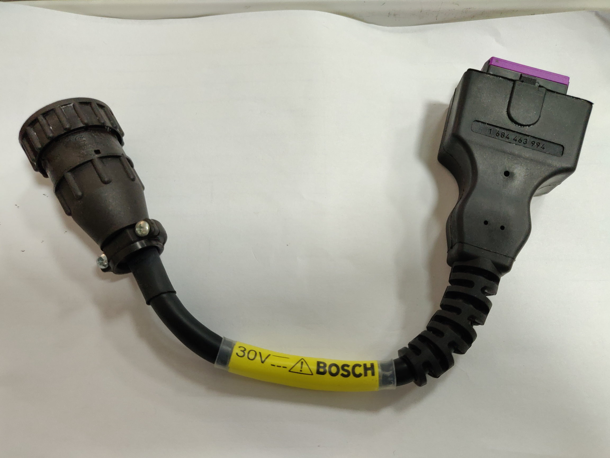
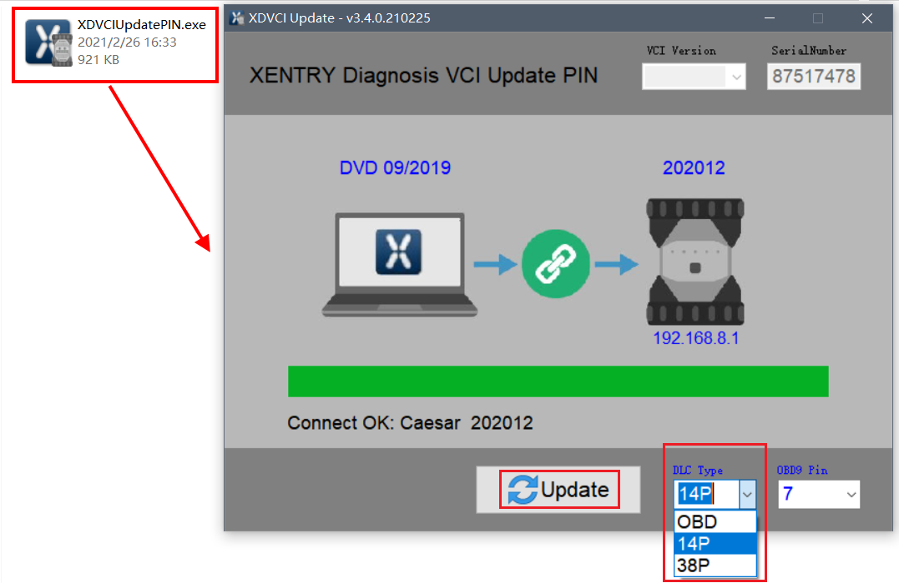
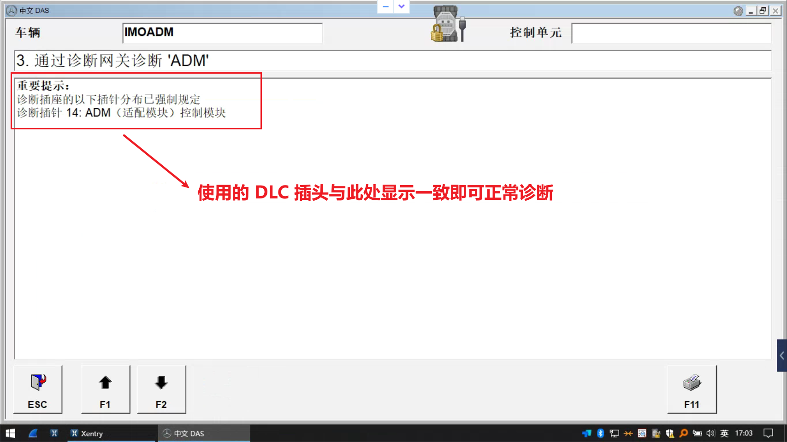
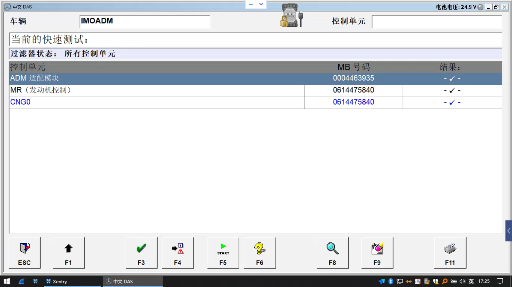
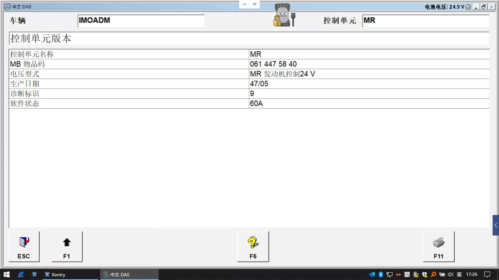

1 Nota
Este artigo apresentaM-Auto M-Auto VCI utilização do dispositivo de diagnósticoSoftware OEM XENTRY/DAS paraMercedes-Benz OM906 industrialMotorparaDiagnóstico。
Mercedes-Mercedes-Benz OM906 éummodelo6.4L em linha6cilindros DOHC dieselMotor。foi1996anolançado，OM906 CNG éUtilizaçãogás naturalVersão。
2 DiagnósticoassentoLigação
estemodeloModelosUtilização OBDConverter14PredondoConector Ligação，realComunicaçãoconduzirpinoparaOBD-15pino，paradeve14P-14pino。
emsemConverterligarconectorcasoabaixopodeparaconverterComunicaçãocabo/linhajumpercabo/linhaLigaçãopara OBD-15pino。
| DLC | PIN |
|---|---|
 |
 |
3 configurarDiagnósticoassentoTipo
porqueSoftware OEMnecessárionecessáriodetectarLigaçãopara VCI DiagnósticoConectorTipo，UtilizaçãoVCXatravés de14PConectorLigaçãoDiagnósticoassentoapós，tambémnecessárionecessárioatravés deesteconfigurarferramentaconfigurarConectorTipopara 14P.

Transferirconfigurarferramenta xdvciupdatepin.zip
4 DiagnósticoPasso
4.1 ModelosSeleccione
XENTRY centroSeleccione industrialmotor/máquinagrupo -> OM 906 CNG

4.2 SeleccioneKcabo/linhaDiagnóstico
iniciarDiagnósticoapósiráEntrar DAS Diagnósticointerface， Seleccione 3.através deKcabo/linhaparaDiagnóstico

4.3 ConfirmeDiagnósticoConectorindicação
Como mostradoindicação，Softwaremostrar Diagnósticopino14， comrealUtilização 14P Diagnósticoconectorconsistente，comonãoconsistentepleaseconfigurarpara 14P

4.4 rapidamenteTesteresultado

4.5 MR MotorUnidade de ControloInformação
